Google Contacts Sync
Description
This application facilitates users and managers to synchronize their Google account related contacts with Odoo. Users can import and export contacts between Google contacts and Odoo. Synchronization facilitates users to keep their Google contacts updated in their Odoo account.
Features List
Import Google contacts in Odoo
Export Odoo contacts to Google
Update contacts while import from Google to Odoo
Update contacts while export from Odoo to Google
Setup in Google
To use Google contacts API users need to generate Google Client ID and Google Client Secret. Steps are as following Go to https://console.developers.google.com Sign In with your Google account. Create New Project
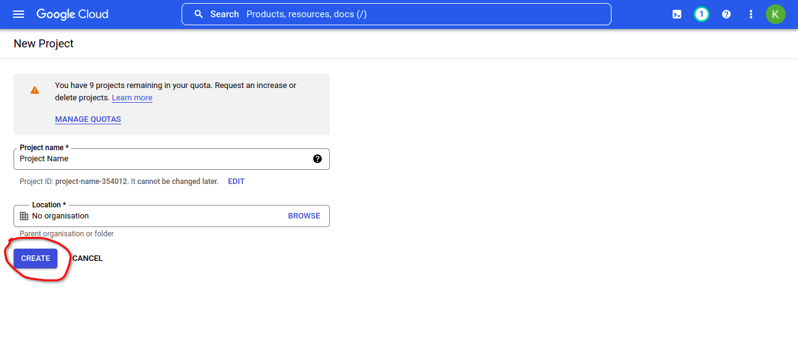Enable Contacts & People API
 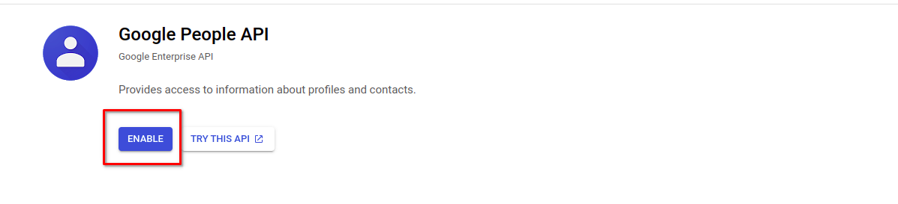
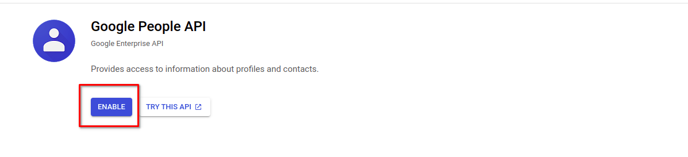
Create Credentials and select 'Oauth client ID'.
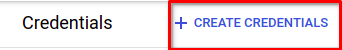 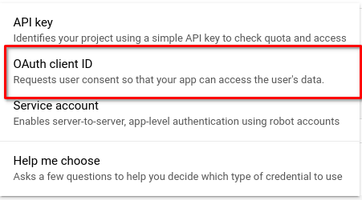Create a Client ID(Select Web Application). Enter the name of the application and the allowed pages on which you will be redirected.
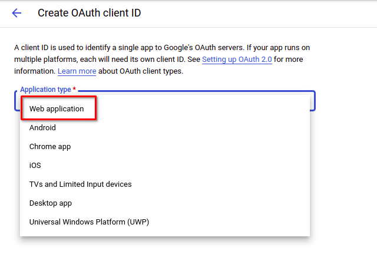 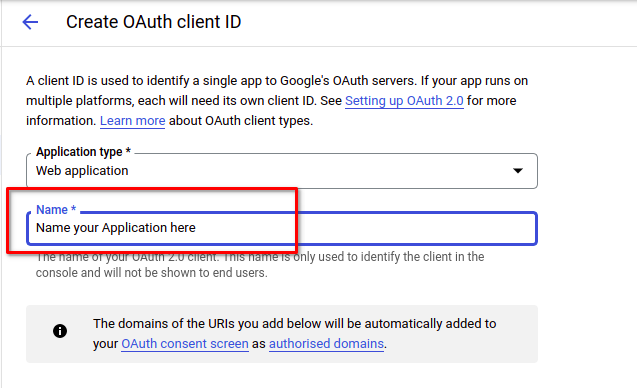 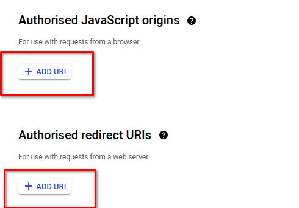Enter /response after your website domain, for example "abc.com/response" in authorised redirect URIs
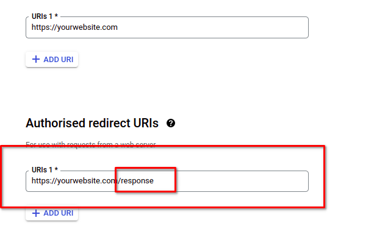Download your client id from the download icon.
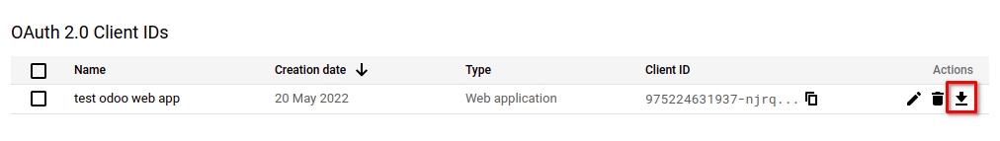Download JSON
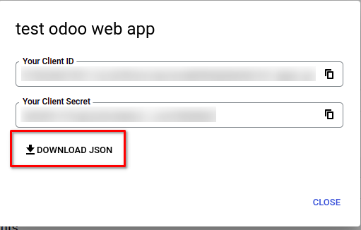Go to settings in your odoo app, you will find menu item in left corner named as Google Contacts
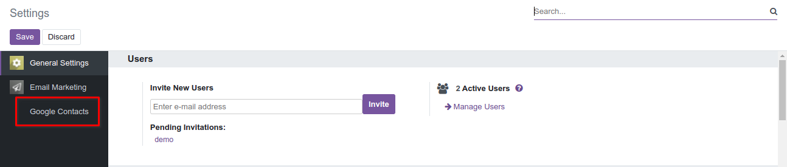Open the JSON file in any text editor, copy the text and paste it in below "Credentials" field.
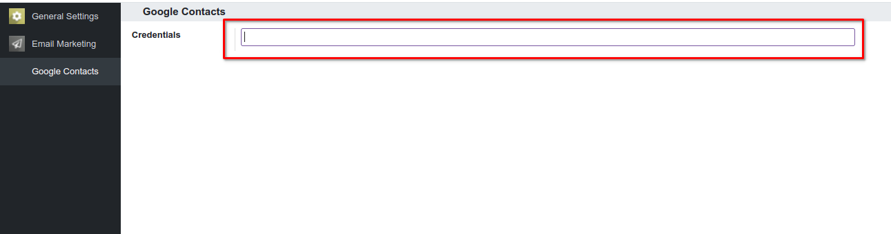Go to contacts menu item in your odoo app, you will find a sub menu over there name "Google Contacts Sync"
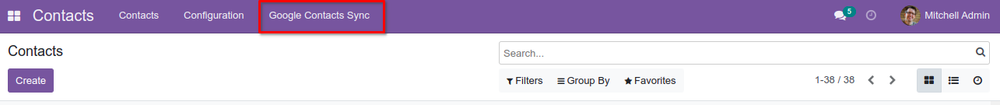Import google contacts
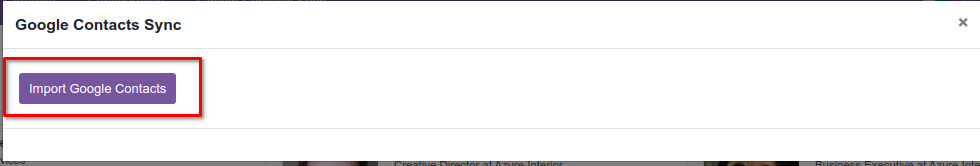Here you will get list of your google contacts, select and click Import Contacts.
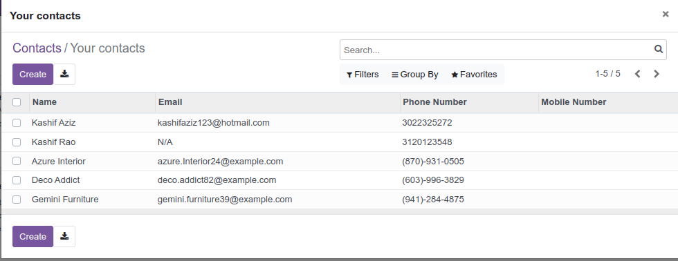 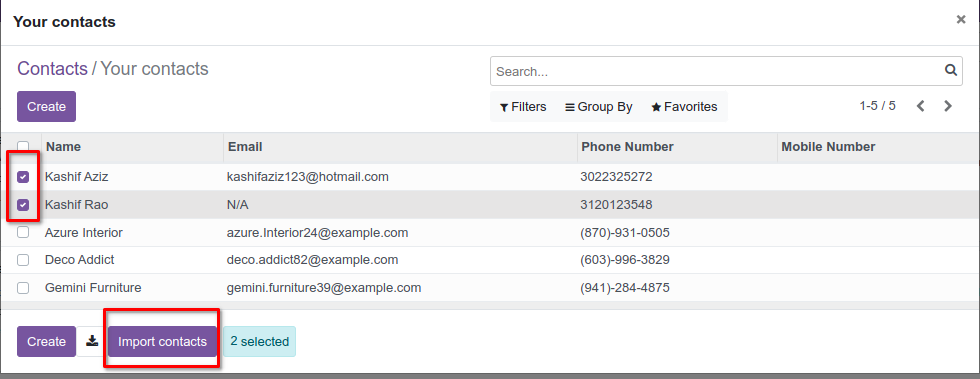To export contacts from odoo to google, go to list view, select contacts and under action you will see "Export google contacts".